Do básico ao competitivo: mecânica, armas, spray, sensibilidade, HUD, treino, estratégia e jogo em equipe. Inclui diagnóstico de mira, laboratório de sensibilidade, construtor de HUD e painel de evolução.
“Quando o treino é difícil, o combate fica fácil.”
Passe o cursor sobre o medalhão ou arraste para girar
10+Módulos de formação
30+Lições práticas
3+Perfis de sensibilidade
18+Armas no ranking
Spray controladoSensibilidade afinadaHUD sob medidaDecisão em equipeDo básico ao competitivoSpray controladoSensibilidade afinadaHUD sob medidaDecisão em equipeDo básico ao competitivo
01
Capítulo 1
Aprender
Como usar o manual, o que a sensibilidade faz de verdade, a trilha de módulos e o terreno onde você vai jogar: mapas, armas e acessórios.
Configure HUD e sensibilidade (seções abaixo) e só então comece a treinar spray. Base ruim atrapalha qualquer treino.
1HUDBotões no lugar certo
2SensibilidadeMira na velocidade certa
3SprayTreino com a base pronta
3
Treine com objetivo
Cada sessão deve ter uma habilidade principal. Use o plano semanal e registre o resultado no diário de treino.
Escolha um foco por sessão
Precisãono exemploControle de recuoRastreamentoReaçãoMovimentaçãoDecisão
4
Mude uma coisa por vez
Trocar arma, mira e sensibilidade ao mesmo tempo impede você de saber o que funcionou.
5
Revise suas partidas
Depois de cada partida, escolha um erro repetido e transforme-o no foco da próxima sessão.
6
Cuide do básico
Fones, conexão estável, tela limpa e pausas curtas aumentam mais o desempenho do que muita gente imagina.
Fundamentos da sensibilidade
O que ela faz, o que não faz e o erro que mais atrasa quem está começando.
Sensibilidade não cria habilidade. Ela apenas potencializa a técnica do jogador.
O que é sensibilidade?
A sensibilidade controla a velocidade com que a sua mira se move quando você desliza o dedo ou usa o giroscópio. Ela influencia:
velocidade da miraprecisãocontrole do sprayvelocidade de reaçãorastreamento do inimigoflick
Sensibilidade não cria habilidade. Ela apenas potencializa a técnica do jogador.
O maior erro dos iniciantes
✕
O erro nº 1Copiar a sensi de um profissional.
Cada jogador tem:
tamanho da mãoforça do dedovelocidade do dedotamanho da telaFPS diferentedispositivo diferentecapinha diferentepelícula diferente
A sensibilidade perfeita de outro jogador provavelmente será ruim para você. Quem copia a configuração de um pro player para acertar sprays longos, ganhar todos os x1 e fazer rushes agressivos costuma deixar de treinar os fundamentos que realmente fazem a diferença.
Controle do spray
Treine rajadas curtas e corrija a mira gradualmente. O desenho é ilustrativo: o padrão real varia conforme a arma e a situação.
Sensibilidade
Altere um valor por vez, teste a mira e compare o resultado. Não existe uma configuração universal perfeita.
Posicionamento
Use obstáculos para reduzir sua exposição, observe os ângulos e evite trocar tiros desnecessariamente em campo aberto.
Rush inteligente
Planeje a aproximação, use coberturas e coordene o avanço com o squad. A rota é esquemática, não um mapa real do jogo.
Toda arma tem um padrão. Veja o efeito da sua compensação em um spray simulado.
No spray, a técnica pesa 40%. Acessórios, só 10%.
Recuo vertical
A mira sobe a cada disparo.
Recuo horizontal
A mira se desloca para os lados durante a rajada.
Recuo aleatório
Parte do movimento não segue um padrão previsível.
Você controla apenas parte desse recuo. Quanto melhor a sua técnica, menos movimento será necessário.
Simulador de spray
Simulação didática do modelo do guia: o recuo vertical soma de 0,5 a 1,5 a cada tiro e a variação horizontal é aleatória. Não representa o padrão de nenhuma arma real.
Subida—
Largura—
O segredo do spray
O spray perfeito depende, nesta ordem, de:
Técnica
40%
Sensibilidade
30%
Posicionamento
20%
Acessórios
10%
A maioria acredita que é o contrário. Por isso tanta gente troca de acessório e de sensi antes de treinar a técnica.
Spray e controle de recoil
Treino prático com progressão e avaliação.
Comece com rajadas curtas e só alongue o spray quando mantiver consistência.
Princípios fundamentais
01 · Controle desde o primeiro tiro
Observe o padrão da arma e faça correções graduais, sem puxar o dedo de forma brusca.
02 · Comece com rajadas curtas
Treine séries de 5–10 tiros; avance para 15 e depois para sprays longos quando mantiver consistência.
03 · Use cobertura e movimento
Evite ficar exposto. Dispare, reposicione-se e retorne à luta com uma rota de saída.
04 · Ajuste a mira à distância
Red Dot e holográfica costumam facilitar o combate próximo; ampliações maiores exigem prática específica.
05 · Registre o resultado
Compare agrupamento, acertos e estabilidade antes de alterar a sensibilidade.
06 · Respire e mantenha o ritmo
Tensão excessiva no dedo gera correções exageradas. Movimentos curtos e constantes funcionam melhor.
Checklist de sessão
Não existe spray perfeito universal. Sensibilidade, FPS, dispositivo, acessórios e prática influenciam o resultado.
Tipos de sensibilidade
Cada controle faz uma coisa diferente. Saiba qual deles mexer.
O giroscópio é quem realmente controla o spray.
Câmera
Serve apenas para movimentar a visão. Não interfere no recuo.
ADS
Controla quanto o dedo movimenta durante o disparo, sem giroscópio. Muito importante para jogadores de dedo.
Giroscópio
É quem realmente controla o spray. Quanto maior o seu domínio do giroscópio, menor a dependência do dedo.
Gyro ADS
Alguns dispositivos permitem configurações diferentes. O funcionamento varia conforme a opção “Giroscópio ao mirar”.
O que faz uma sensibilidade ser boa?
Uma boa sensibilidade precisa permitir:
subir no recuo sem esforço
acompanhar veículos
acompanhar rush
controlar sprays longos
micro ajustes
flick rápido
estabilidade
O equilíbrio
Profissional
BaixaAlta
Sensibilidade baixa
maior precisão
estabilidade
lenta
ruim para rush
Sensibilidade alta
velocidade
rush
difícil de controlar
A sensibilidade profissional é o equilíbrio entre as duas.
Central de sensibilidades TKS
Valores transcritos do guia original. Edite os campos para experimentar; o botão restaura os valores-base.
Configuração
Câmera / sensibilidade
Sensi ao mirar (ADS)
Giroscópio
Nota de transcrição: alguns valores incomuns foram mantidos como enviados, inclusive “Mira 8 = 246” na sensibilidade ADS média. Confira no jogo antes de aplicar. “Giro ao mirar desativado” foi preservado como observação do seu setup.
Sensibilidade baixa
Mais precisão para mirar de longe; exige mais movimento do dedo para girar a câmera.
Sensibilidade alta
Giro rápido e reação a flancos; pede mais controle fino para não passar do alvo.
Como testar
Use o campo de treino, mude um valor por sessão e compare acertos. Mantenha só o que melhorar o controle.
Laboratório de sensibilidade
Monte uma base para testar no campo de treino. Os valores são sugestões iniciais, não uma configuração oficial ou universal.
Seu perfil de jogo
PerfilEquilibrado
GiroscópioLigado
Escala0–300
Não existe sensibilidade perfeita para todos. Teste no campo de treino alterando 5 a 10 pontos por vez. O resultado também depende de FPS, tamanho da tela, HUD e costume com os controles.
Como criar a sua própria sensibilidade
ETAPA 1
Escolha uma arma: M416.
ETAPA 2
Entre no campo de treinamento.
ETAPA 3
Fique a 50 metros do alvo.
ETAPA 4
Faça um spray completo e observe.
A mira sobe?Aumente
A mira desce?Diminua
Vai para a esquerda?Controle com técnica
Vai para a direita?Treine
Teste profissional: 20 sprays
Faça 20 sprays e anote cada resultado. Se menos de 70% forem bons, você ainda não encontrou a sua sensibilidade. Aqui, só os sprays perfeitos contam como bons.
0 de 20 sprays registrados
Registre os resultados para ver a avaliação.
Diagnóstico de mira
Quatro testes rápidos para medir reação, precisão, rastreamento e controle de recuo. Leva cerca de 2 minutos.
Aparelho: —
Como funciona
Reação
Quanto tempo você leva para reagir quando o alvo aparece.
5 rodadas
Precisão
Acertar alvos pequenos que surgem em pontos diferentes da tela.
15 alvos
Rastreamento
Manter a mira em cima de um alvo que se move.
12 segundos
Controle de recuo
Segurar a mira no centro enquanto ela sobe e balança num spray.
3 sprays
Feito para celular. Com o aparelho deitado, o botão de tiro fica à esquerda e o dedo direito move a câmera, como no PUBG Mobile. No computador dá para jogar com o mouse, com resultados separados. O teste mede sua mão e seu reflexo, não a sensibilidade do jogo: compare você com você mesmo, sempre no mesmo aparelho. Os resultados ficam salvos neste navegador.
FPS, tela e aparelho
O hardware muda a sensação da mira. Reveja a sensibilidade depois de mudar qualquer item desta lista.
FPS altera completamente a sensação da sensibilidade.
O papel do FPS
Quanto maior o FPS, mais informação a tela entrega por segundo.
30 FPS
60 FPS
120 FPS
Demonstração aproximada: a sua tela limita quantos quadros você consegue ver.
60 FPS: menos quadros, menos suavidade
90 FPS: movimentos muito mais suaves
120 FPS: controle extremamente refinado
FPS altera completamente a sensação da sensibilidade.
Refresh rate
60 Hz
menos atualização
90 Hz
melhor
120 Hz
excelente
Quanto maior o refresh, mais suave fica o movimento do dedo.
Touch sampling rate
Poucos jogadores conhecem este número. Ele é a velocidade com que a tela lê o seu dedo.
120 Hz
240 Hz
360 Hz
480 Hz
720 Hz
Quanto maior, mais rápido o celular entende o seu movimento.
DPI (Android)
O DPI altera velocidade percebida, precisão e deslizamento. Nem sempre aumentar melhora. O ideal é o equilíbrio.
Aim assist
Iniciantes: pode ajudar. Competitivo: deve ser desligado, para você aprender a mirar sozinho.
HUD e mecânica dos dedos
O HUD é pessoal: adapte posição, tamanho e transparência à sua tela e conforto.
O HUD é pessoal. Teste uma mudança por vez, durante várias sessões.
Estrutura sugerida para 3–4 dedos
Deixe o movimento acessível ao polegar esquerdo.
Considere um botão de tiro separado para o indicador esquerdo.
Mantenha mira, agachar e pular ao alcance sem bloquear a visão.
Evite botões sobre áreas importantes do campo de visão.
Teste uma mudança por vez durante várias sessões.
Teste de HUD
Dicas de conforto
Limpe a tela: dedo suado ou sujo atrapalha o arrasto.
Aumente a transparência de botões que você raramente usa.
Faça pausas curtas para evitar fadiga e dor nas mãos.
Se o aparelho esquentar, o desempenho pode cair; jogue em local ventilado.
Botões que valem um lugar fixo
Tiro (esquerdo e/ou direito) e mira (ADS).
Agachar, deitar e pular.
Espiar (peek) para os dois lados, se usar.
Recarregar e troca rápida de arma.
Construtor de HUD
A melhor sensibilidade não funciona em um HUD ruim. Os dois precisam trabalhar juntos: boa posição dos botões reduz erros.
Perfil de jogo
Adicionar botões
CombateMovimentaçãoArmas e inventárioVeículos e outros
Editar botão selecionado
Controles na tela0
Dedos4
ModeloClaw 4
Prévia interativa
Arraste os botões para posicioná-los. Toque em um controle para selecioná-lo e editar nome, tamanho, transparência ou rotação. A área é apenas uma prévia visual.
Selecione um botão para começar.
Controles ativos
03
Capítulo 3
Jogo
Combate, utilitários, cura, equipamento, veículos e salas de treino: a mecânica aplicada às decisões da partida.
Vida limite de 75 para bandagem e primeiros socorros
075100
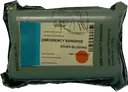
Bandagem
+10 de vida por uso, aos poucos, até 75
4 s
Dano leve entre uma troca e outra. Leve várias.
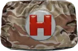
Primeiros socorros
Leva a vida até 75
6 s
Depois de levar muito dano, com alguns segundos de cobertura.
Kit médico
Enche a vida até 100
8 s
Muito ferido e em segurança. É raro: guarde para o final.
Boost barra de 4 faixas
0100
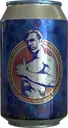
Bebida energética
+40 de boost
4 s
Manter o boost ativo durante a rotação.
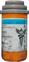
Analgésico
+60 de boost
6 s
Antes de abrir luta e para passar de 75 de vida.
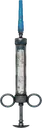
Adrenalina
Enche o boost (+100)
6 s
Final de zona: enche o boost de uma vez.
O boost recupera a vida aos poucos enquanto dura e, nas faixas mais altas, também aumenta a velocidade de corrida. Ele é o jeito de passar de 75 de vida sem kit médico.
Tempos aproximados, de referência para PUBG Mobile; podem variar entre atualizações.
Equipamento do jogador
Capacete, colete e mochila por nível: o que cada um protege ou carrega e quando vale trocar.
Capacete
Protege a cabeça. Quanto maior o nível, menos dano por tiro e mais tiros ele aguenta.
Nível 1
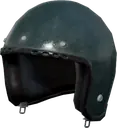
Reduz 30% do dano
Durabilidade
80
Nível 2
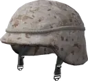
Reduz 40% do dano
Durabilidade
150
Nível 3
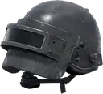
Reduz 55% do dano
Durabilidade
230
Colete
Protege o tronco, onde a maior parte dos tiros acerta.
Nível 1
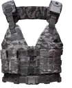
Reduz 30% do dano
Durabilidade
200
Nível 2
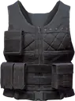
Reduz 40% do dano
Durabilidade
220
Nível 3
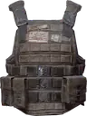
Reduz 55% do dano
Durabilidade
250
Mochila
Aumenta o espaço do inventário para munição, cura e utilitários.
Nível 1
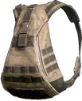
+150 de espaço
Espaço extra
150
Nível 2
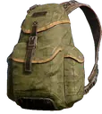
+200 de espaço
Espaço extra
200
Nível 3
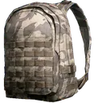
+250 de espaço
Espaço extra
250
Quando trocar
Pegue o nível maior, se estiver inteiro.
Um item de nível maior reduz mais dano por tiro e aguenta mais tiros antes de quebrar.
Compare a durabilidade antes de trocar.
Um item de nível menor intacto pode proteger mais que um de nível maior quase quebrado. A barra de durabilidade aparece no inventário.
Capacete nível 3 muda o duelo de sniper.
Com nível 3, um tiro de Kar98k na cabeça não derruba. A AWM derruba com qualquer capacete.
Mochila maior, mais recursos.
Mais espaço significa mais munição, cura e granadas para o final. A mochila nível 3 é maior e mais visível nas costas.
Roupa ghillie
Camuflagem para vegetação. Aparece em suprimentos aéreos em alguns mapas. Funciona melhor para quem joga parado de sniper; em mapas de cor diferente, como neve e deserto, ajuda menos.
Valores de referência de PUBG Mobile (reduções de dano e durabilidade por nível); podem mudar com atualizações. Imagens: PUBG API Assets.
Guia de veículos
Qual veículo escolher para cada situação e em quais mapas ele aparece.
Motocicleta
2 lugaresVários mapas
Rotação rápida
+Um dos veículos mais rápidos do jogo.
−Deixa quem está nela exposto e é difícil de controlar em alta velocidade.
Moto com sidecar
3 lugaresVários mapas
Rotação rápida
+Rápida e leva um terceiro jogador.
−Mesma exposição da moto; o sidecar deixa a curva mais pesada.
Dacia
4 lugaresErangel, Miramar, Vikendi
Rotação rápidaSquad completo
+Rápido na estrada e com capota para o squad inteiro.
−Sofre em subidas e topos de morro.
UAZ
4 lugaresErangel, Miramar
Squad completoFora de estradaProteção
+Resistente e bom fora de estrada. A versão fechada demora mais para pegar fogo.
−Mais lento que o Dacia na estrada. A versão aberta expõe o squad.
Buggy
2 lugaresVários mapas
Fora de estrada
+Sobe bem em terreno íngreme.
−Leve, derrapa fácil e o passageiro fica exposto.
Mirado
4 lugaresMiramar
Rotação rápidaSquad completo
+Muscle car, entre os mais rápidos. É baixo, o que dificulta acertar quem está dentro.
−Ruim fora de estrada.
Picape
4 lugaresMiramar
Squad completoFora de estrada
+Anda bem no deserto e leva o squad.
−Grande, é fácil de ver e de acertar.
Micro-ônibus
6 lugaresMiramar
Squad completo
+Muita vida.
−Lento, grande e ruim no terreno rochoso de Miramar.
Rony
4 lugaresSanhok
Fora de estradaSquad completo
+Rápido, leve, silencioso e bom fora de estrada.
−Com mais de dois jogadores, quem vai atrás fica exposto.
Scooter
2 lugaresSanhok
Rotação rápida
+Funciona bem nas estradas de Sanhok.
−Pouca vida e fraca em subidas e terreno de pedra.
Tukshai
3 lugaresSanhok
Squad completo
+Leva três jogadores.
−Lento, pouca vida e não serve de cobertura.
Moto de neve
2 lugaresVikendi
NeveRotação rápida
+Rápida na neve.
−Expõe quem está nela.
Zima
4 lugaresVikendi
NeveSquad completoFora de estrada
+Jipe para neve e terreno difícil, com o squad protegido.
−Mais lento que a moto de neve.
BRDM-2
4 lugaresPedido com sinalizador fora da zona
ProteçãoÁguaFora de estrada
+Blindado, anda na terra e na água e aguenta muito dano.
−Não tem armas e é lento na água.
Lancha PG-117
Mapas com água
Água
+Muita vida e rápida na água.
−Curva devagar e pode encalhar perto da margem. É aberta.
Aquarail
2 lugaresMapas com água
Água
+Controle excelente.
−Pouca vida; só para trechos curtos.
Regras de uso
Saia do veículo antes de chegar.
Pare atrás de cobertura e longe da linha de visão do inimigo. Chegar de carro no meio da luta denuncia o squad.
Saia quando pegar fogo.
Veículo em chamas explode em poucos segundos. Fique de olho na vida do veículo durante a rotação.
Veículo como cobertura.
No final, um carro parado vira cobertura, mas pode explodir com tiros. Prefira terreno quando houver.
Use para rotacionar, não para lutar.
O veículo é ótimo para entrar cedo na zona; atirar de dentro dele quase sempre perde para quem está parado no chão.
Disponibilidade por mapa de referência para PUBG Mobile; pode mudar com atualizações e modos. Imagens: PUBG API Assets.
Códigos de MDM e prática
Códigos preservados conforme enviados no guia. Copie e cole no jogo para verificar disponibilidade.
Não foi possível validar os códigos em tempo real. Se algum estiver expirado ou incorreto, atualize esta lista com o código vigente.
Como usar a sala de treino
MDM/TDM servem para treinar duelos reais com recarga rápida.
Escolha uma arma e use só ela por uma sessão inteira.
Defina uma meta: acertos, tempo para eliminar ou número de duelos vencidos.
O que treinar lá
Peek e recuo atrás de cobertura.
Troca rápida de arma sob pressão.
Spray a diferentes distâncias.
Comunicação com o squad durante o confronto.
04
Capítulo 4
Evolução
Método, rotina e mentalidade, mais o painel para registrar treinos e partidas e medir o que mudou.
Antes de mudar qualquer coisa, registre o modelo do aparelho e da tela, o FPS e sua estabilidade, o HUD e os dedos usados, o modo do giroscópio, as armas e miras mais usadas e as principais dificuldades.
2. Referência
Escolha uma configuração inicial e teste em condições semelhantes. Arma, mira, distância e método ficam fixos em cada comparação.
3. Ajustes controlados
Cada alteração tem uma finalidade. Mude uma variável por vez, observe e registre a conclusão.
4. Validação em cenários diferentes
Confirme em combate próximo, média e longa distância, com alvos parados e em movimento e em partidas reais.
5. Registro e consolidação
Anote a configuração, a data, o dispositivo e as observações. Só altere de novo quando houver uma necessidade identificada.
Como ler os sintomas
A mira ultrapassa o alvo no rastreamento: pode ser preciso reduzir a sensibilidade.
A mira não alcança o alvo com velocidade: pode ser preciso aumentar.
No recoil, descubra se o problema está na sensibilidade, na execução, na estabilidade do aparelho ou na própria arma.
Sessão de referência · 60 min
10′Aquecimento
15′Mecânico
10′Situacional
20′Aplicação
5′Análise
10 min · Aquecimento
Mira, movimentação e familiarização com os controles.
15 min · Treino mecânico
Recoil, rastreamento e troca de alvos. Pratique também o giroscópio.
10 min · Treino situacional
Combate próximo, pré-mira e uso de cobertura.
20 min · Aplicação prática
Partidas em Squad com foco em objetivos, não só em eliminações.
5 min · Análise
Um acerto, um erro e uma ação de melhoria.
Adapte a duração ao seu nível e à sua disponibilidade. O importante é manter regularidade e propósito.
Indicadores de desempenho
precisão nos exercícios de miracontrole do recoilrastreamento de alvos em movimentomortes por isolamentocomunicação e apoio ao Squaddecisões de combate e rotaçãocontrole emocionalcolocação, eliminações e dano
Os números não valem isolados. Muitas eliminações não provam boas decisões, e uma partida ruim não significa falta de evolução. Sempre que puder, revise gravações ou replays e responda:
O que aconteceu?
Qual foi a causa mais provável?
O que será feito de diferente na próxima tentativa?
Critérios de evolução do aluno
A progressão não depende só de tempo de jogo, patente ou eliminações. O aluno demonstra:
execução consistente dos exercícios técnicos
capacidade de explicar a finalidade de suas configurações
identificação e correção de erros recorrentes
aplicação dos fundamentos em situações reais
comunicação e cooperação adequadas no Squad
decisões mais conscientes sob pressão
análise do próprio desempenho com metas realistas
Exercícios e níveis
Marque os exercícios concluídos e escolha o seu nível de controle atual.
10 exercícios
Evolução: até onde você controla o spray?
Toque no nível que você já domina. O destaque fica salvo neste navegador.
20 m30 m50 m100 m150 m200 m
Rotina semanal da Academy
Um modelo simples para ganhar consistência. O dia de hoje fica destacado.
SEGUNDA
Spray básico
Controle vertical.
TERÇA
Spray lateral
Tracking.
QUARTA
Veículos
Distância.
QUINTA
Rush
Reflexo.
SEXTA
MDM
Duelos reais em sala de treino.
SÁBADO
Revisão
Reveja partidas e escolha o erro mais repetido.
DOMINGO
Descanso
Ou análise de partidas.
Mentalidade profissional
Ter mentalidade profissional é tomar boas decisões, manter a calma sob pressão e jogar com consistência mesmo quando a partida não vai bem.
A evolução se mede em semanas, não em partidas.
1
Controle emocional
Não deixe uma derrota afetar a próxima partida. Evite jogar com raiva, culpar os companheiros ou decidir no impulso.
2
Treino com propósito
Não entre no treino só para atirar. Pratique o recoil da M416, o controle da AKM, rastreamento e precisão em várias distâncias.
3
Consciência de jogo
Observe a zona, os sons, as posições dos inimigos, a cobertura e as rotas de fuga. Nem toda luta vale a pena.
4
Disciplina
Mantenha sensibilidade e HUD estáveis por um período. Evite mudar tudo depois de uma única partida ruim.
5
Comunicação
Informe localização, quantidade de inimigos, dano causado e necessidade de recursos, com chamadas curtas e objetivas.
6
Posicionamento
Use cobertura, evite ficar parado em campo aberto e pense na próxima posição antes de iniciar o confronto.
7
Análise das partidas
Depois de morrer, pergunte: por que perdi? A mira falhou? Fiquei sem cobertura? A luta era necessária? Escolha um erro para corrigir.
Um jogador profissional entende que
sensibilidade é ferramenta, não milagre
consistência vence configurações extremas
treino deliberado supera talento natural
cada erro é uma oportunidade de ajuste
a evolução se mede em semanas, não em partidas
Princípios da Academy
consistência acima de resultados isolados
disciplina acima da impulsividade
responsabilidade individual pelos próprios erros
controle emocional depois de derrotas
aprendizado contínuo a partir dos erros
paciência e progressão
respeito a adversários, companheiros e regras de torneio
Painel competitivo
Registre treinos e partidas, acompanhe 30 dias e transforme cada erro em um objetivo. Os dados ficam só neste navegador.
0/30Dias acompanhados
0Partidas registradas
0Eliminações
0.00K/D registrado
Treino de hoje
0 de 5 atividades concluídas
Evolução em 30 dias
0 de 30 dias concluídos
Dias 1–7 · Fundação
Mira, recoil, giroscópio e diagnóstico dos erros.
Dias 8–14 · Combate
Combates próximos, cobertura e escolhas de confronto.
Dias 15–21 · Tática
Comunicação, rota, apoio e controle de zona.
Dias 22–30 · Competição
Funções no Squad, consistência e revisão de partidas.
Registrar partida
Análise do desempenho
Elim. / partida0.0
Dano médio0
Erro mais frequente—
Partidas com calma0%
Histórico recente
Ainda não há partidas registradas.
Metas semanais
Marque os dias em que cumpriu cada objetivo.
Revisão pós-sessão
Diário e meta da semana
Diário de treino
As notas ficam salvas apenas neste dispositivo/navegador.
Meta da semana
Marque as tarefas concluídas para atualizar o progresso do manual.
Erros comuns (e como corrigir)
Se você se reconhece em algum, ótimo: é onde mais dá para evoluir.
Nenhuma configuração substitui repetição com objetivo.
01
Copiar a sensi de um profissionalIniciante
Mão, dedo, tela, FPS e aparelho são diferentes dos seus.
Como corrigir: Use como ponto de partida e ajuste ao seu aparelho e à sua mão.
02
Querer jogar como pro antes do básicoIniciante
Sprays longos e rushes agressivos vêm depois dos fundamentos.
03
Trocar a sensibilidade toda semanaIniciante
Sem tempo de uso você não consegue medir o resultado.
Como corrigir: Escolha um perfil e use por tempo suficiente para medir o resultado.
04
Mudar o HUD todo diaIniciante
O dedo precisa de repetição para criar memória muscular.
Como corrigir: Teste um layout por várias sessões antes de decidir.
05
Entrar no treino só para atirarIniciante
Sem objetivo definido, a sessão não gera evolução.
06
Ignorar o posicionamentoIniciante
Cobertura e ângulo decidem mais lutas do que a mira.
07
Não revisar as próprias partidasIniciante
Sem análise, o mesmo erro se repete.
08
Não treinar
Nenhuma configuração substitui repetição com objetivo.
09
Treinar cansado
Cansaço gera correções exageradas e maus hábitos. Faça pausas.
10
Culpar a sensibilidade
Antes de mexer, confirme HUD, FPS, giroscópio, pegada e técnica.
11
Não gravar a gameplay
A gravação mostra a sequência de decisões que levou à morte.
12
Puxar o spray com força demais
Faça correções curtas e graduais, observando o padrão da arma.
13
Repetir o peek no mesmo ponto
Mude ângulo, ritmo e altura. Previsibilidade custa vidas.
14
Lutar sem rota de saída
Antes de abrir o confronto, saiba para onde recuar.
15
Guardar utilitário até morrer
Granadas e fumaças valem mais usadas no momento certo do que na mochila.
16
Falar demais no confronto
Use informação curta: posição, direção, dano e necessidade de apoio.
Checklist final
Responda antes de alterar a sua sensibilidade. Se alguma resposta for “não”, resolva esse ponto primeiro.
Marque as respostas “sim” para ver a avaliação.
05
Capítulo 5
Referência
Glossário, perguntas frequentes, vídeos e o compromisso da Academy, para consultar quando precisar.
Termos que você vai ouvir nos treinos e nas calls.
Perguntas frequentes
Respostas rápidas para as dúvidas mais comuns.
Qual é a melhor sensibilidade?
Não existe uma única. Use os perfis TKS como ponto de partida e ajuste um valor por vez, comparando resultados no campo de treino.
Quanto tempo devo treinar por dia?
Sessões focadas de 20 a 40 minutos, com objetivo claro, rendem mais do que horas sem foco. Faça pausas para evitar fadiga.
Devo usar 3 ou 4 dedos?
Depende do conforto e do tamanho da tela. Teste um layout por vários dias antes de decidir e verifique se você move, mira e atira ao mesmo tempo.
Qual arma é a melhor para começar?
Armas versáteis e fáceis de controlar, como a M416, ajudam a construir a base. Depois você pode testar outras conforme seu estilo.
Como melhorar o spray rapidamente?
Comece com rajadas curtas, aumente aos poucos, repita em várias distâncias e registre o agrupamento. Consistência vale mais que velocidade.
Posso copiar a sensibilidade de um profissional?
Pode usar como ponto de partida, mas ela provavelmente não serve para você. Mão, dedo, tela, FPS e aparelho mudam o resultado. Ajuste um valor por vez no campo de treino.
O FPS muda a sensibilidade?
Sim. Com mais FPS a tela entrega mais informação e o movimento fica mais suave, o que altera a sensação da mira. Refaça os testes quando mudar o FPS.
Quando devo mudar a minha sensibilidade?
Quando houver um problema técnico identificado, depois de pelo menos 100 sprays e de revisar HUD, FPS e giroscópio. Use o checklist final antes de decidir.
Os códigos de MDM funcionam sempre?
Podem expirar ou mudar com atualizações do jogo. Se algum não funcionar, atualize a lista com o código vigente.
Meu progresso e minhas notas ficam salvos?
Sim, mas apenas neste navegador e dispositivo. Limpar os dados do navegador apaga o registro.
Biblioteca de vídeos
Links fornecidos no material original.
▶ Spray na prática Demonstração geral do conteúdoAssistir ↗
▶ Equipamentos Orientações sobre acessóriosAssistir ↗
▶ Sensibilidade Orientações para configuraçãoAssistir ↗
Compromisso da Academy
A excelência competitiva não nasce de um ajuste ou de uma configuração secreta.
Princípio fundamental
Um jogador excelente é resultado de conhecimento técnico, disciplina, repetição consciente, adaptação, controle emocional e análise constante de desempenho. A sensibilidade é uma ferramenta que transforma o movimento do seu corpo em ação no jogo, e seu resultado depende de tela, FPS, HUD, dedos, giroscópio, estilo de jogo e experiência.
Por isso não existe uma configuração universal. A boa configuração entrega controle, precisão, conforto e consistência para o seu aparelho e para a sua mão.
Compreender antes de copiar, treinar antes de competir e analisar antes de repetir.
A formação capacita o aluno a
compreender a sensibilidade e sua influência na mira
ajustar câmera, ADS e giroscópio às suas necessidades
desenvolver recoil, rastreamento, precisão e reação
adaptar-se a armas, miras, distâncias e situações
melhorar movimentação, posicionamento e leitura de jogo
desenvolver comunicação, disciplina e cooperação em Squad
transformar erros recorrentes em objetivos de treino
medir a evolução por indicadores, e não só por eliminações
O jogo recebe atualizações e mudanças de balanceamento. Trate as configurações deste manual como referências de trabalho, repita os testes quando algo mudar e confira a versão vigente do jogo.
GO TKS
Não é sorte. É treino, técnica e conhecimento.
Continue do básico ao competitivo, uma sessão de cada vez.